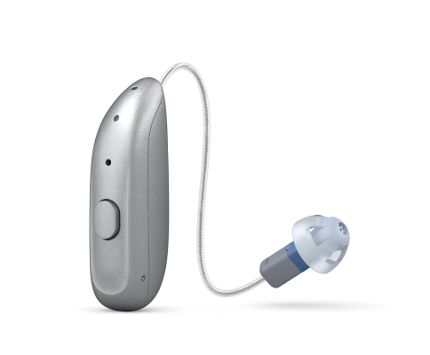
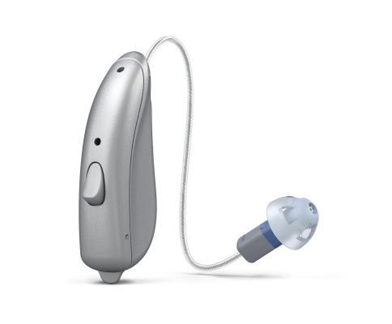
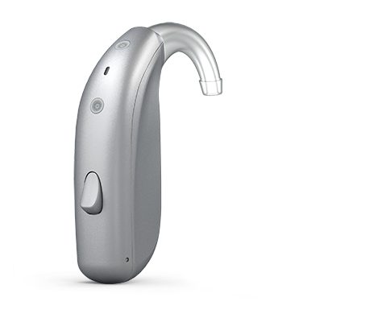
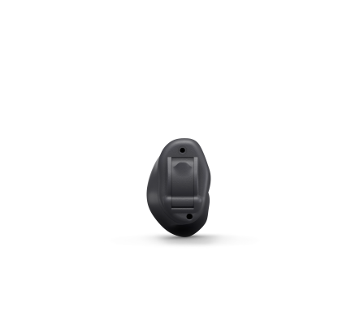
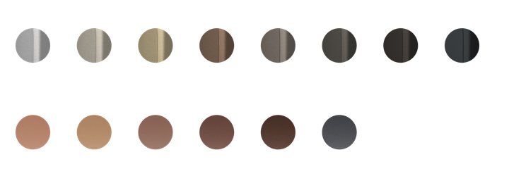
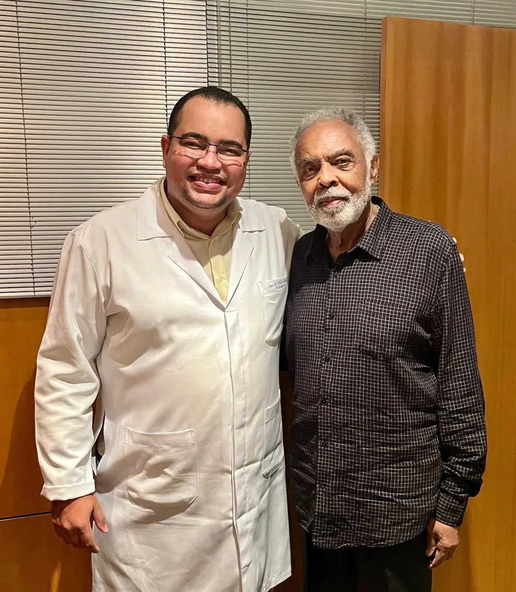
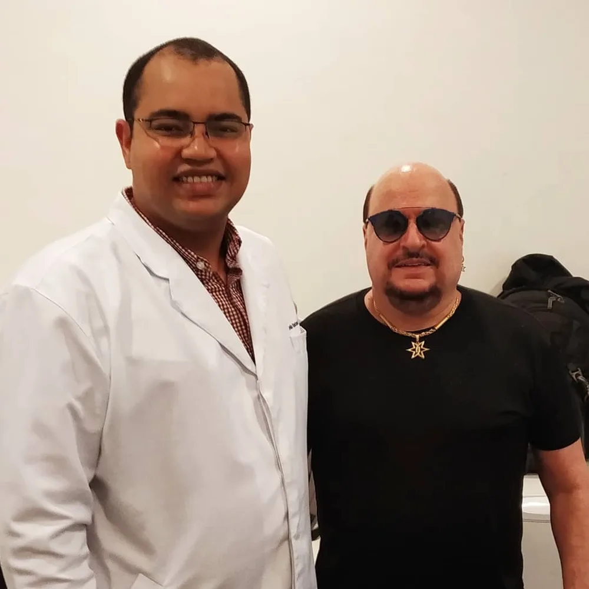
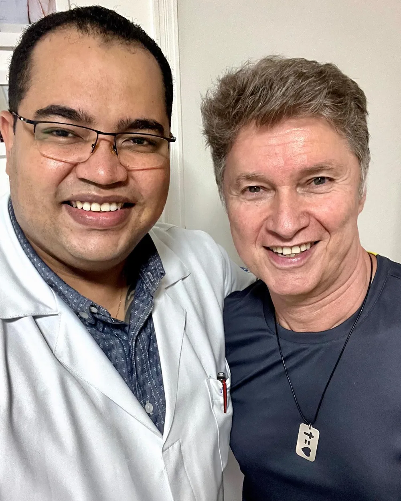
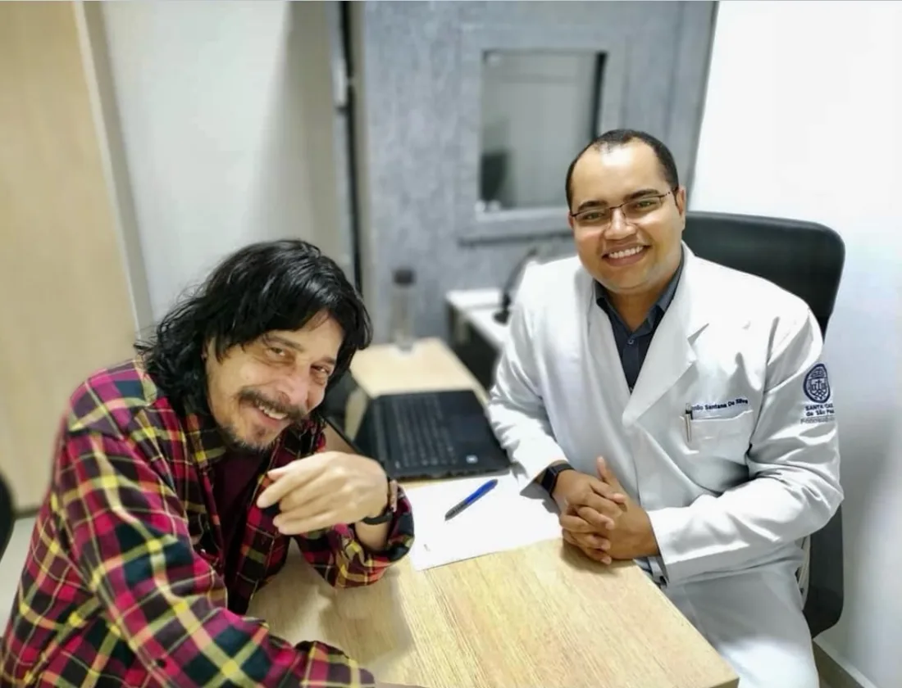

Perda auditiva não tratada não impacta só a audição. Ela reduz estímulo cerebral. Não é sobre escutar menos. É sobre o cérebro deixar de processar informação. Por isso, tratar cedo não é estética. É preservação.
Simulador
Ouça como uma perda auditiva apaga a fala.
Aperte o play e arraste o controle. É a voz do Danilo, filtrada do jeito que uma pessoa com perda auditiva escuta: os agudos somem primeiro, e são eles que separam um "faca" de um "vaca".
Simulação ilustrativa, não substitui a audiometria. Use fones de ouvido para sentir melhor.
Audição normalVocê ouve a fala inteira, com consoantes nítidas.
gravefrequência (Hz)agudo
"Perda auditiva não se resolve em minutos. Não é só olhar um exame e indicar um aparelho."
01/04
Como funciona
Não é só olhar um exame e indicar um aparelho.
01
Avaliação completa e minuciosa
Audiometria e conversa sem pressa. Perda auditiva se entende pela rotina, pelo ambiente, pela expectativa e pelo comportamento de cada pessoa. Cada detalhe influencia no resultado.
"Uma avaliação superficial quase sempre leva a uma solução superficial."
02
Indicação com clareza
Quanto mais caro, melhor? Na prática, não funciona assim. Cada tipo de perda exige uma abordagem diferente, e nem sempre o mais avançado é o mais adequado.
"A decisão deixa de ser emocional e passa a ser estratégica."
03
Adaptação progressiva
Muita gente abandona o aparelho nos primeiros dias. Não é falta de disciplina, é erro no processo. O cérebro precisa reaprender a ouvir, e isso acontece aos poucos, com teste no dia a dia.
"Adaptação não é imediata. É progressiva."
04
Ajustes e acompanhamento
Regulagens finas, retornos e orientação até o aparelho deixar de ser um acessório e passar a fazer parte da sua vida.
"Quando bem indicada e ajustada, a tecnologia passa a fazer parte da sua vida."
Aparelhos auditivos · GN Danavox
A tecnologia que eu indico: Danavox Boreal.
Uma solução auditiva inovadora da GN, o grupo dinamarquês que também está por trás da ReSound. Feita para você ouvir bem e ser ouvido, com mais clareza de fala em qualquer ambiente, até nos mais barulhentos. E eu conheço cada modelo por dentro: não basta um bom aparelho, ele precisa ser escolhido e regulado para a sua audição.

miniRIE 60S · recarregável
Pequeno e recarregável
O menor da família entre os que ficam atrás da orelha, com o receptor dentro do canal. Uma carga rápida garante energia para o dia todo.

RIE 61 · RIE 62
Receptor no canal
Discreto atrás da orelha, com um fio fino até o receptor no canal. Som natural e conforto para usar o dia inteiro.

BTE · Power BTE
Atrás da orelha
Mais potência para perdas maiores, inclusive as severas. Robusto, fácil de manusear e com versão recarregável.

CIC · sob medida
Quase invisível
Feito a partir do molde do seu ouvido e encaixado todo dentro do canal auditivo. Para quem prioriza discrição acima de tudo.
O que muda no seu dia a dia
Conversa no restauranteO Boreal foi feito para entender melhor a fala no meio do barulho. E o programa para ambientes ruidosos fica a um toque, no app.
Sua voz soa como sua vozPercepção natural da própria voz e som claro ao redor, para a conversa fluir sem aquela sensação de eco ou de ouvido tampado.
Celular direto no ouvidoLigações, música, vídeos e podcasts transmitidos direto para o aparelho, de iPhone, iPad ou Android. Em iPhone e iPad compatíveis, dá pra atender ligação sem tirar o celular do bolso.
Carga rápida, dia inteiroNos modelos recarregáveis, uma recarga rápida dá energia para o dia todo. Nada de ficar trocando pilha.
Chuva, suor e poeiraModelos com certificação IP68, resistentes a água e poeira, e com menos manutenção. Pode usar na caminhada e no dia a dia sem medo.
Ajuste sem sair de casaPelo app BeMore você controla volume e programas. E a tecnologia permite regulagens finas à distância, quando faz sentido.
TV e reuniõesAcessórios com Auracast: o TV-Streamer+ leva o som da TV direto para o aparelho, e o Multi-Mic+ aproxima a voz de quem fala e corta o ruído em volta.
Discreto do seu jeitoOito cores para os modelos atrás da orelha e seis para os sob medida, pensadas para combinar com o tom do cabelo e da pele.

Como eu escolho com você
Formato, nível de tecnologia e regulagem saem da sua avaliação, não de uma vitrine.
01Audiometria e conversa sobre sua rotina: trabalho, família, TV, restaurante, música.
02Indico o formato e o nível que fazem sentido para a sua perda, sem empurrar o mais caro.
03Você testa o aparelho no dia a dia antes de decidir.
04Ajustes e retornos até o som ficar natural para você.
Danavox e Boreal são marcas da GN Hearing A/S. Imagens: GN Hearing.
Soluções auditivas
Esqueça aquele aparelho grande e aparente.
Hoje eles são discretos, recarregáveis, reduzem ruído, focam na fala e se conectam direto ao celular. O ponto mais importante não é a tecnologia: é como ela é aplicada.
Saúde auditiva de músicos
Quem vive do som confia o ouvido a ele.

Gilberto Gil"Hoje foi dia de cuidar da saúde auditiva dessa grande lenda da música brasileira."

Paulinho · Roupa NovaPré-molde das orelhas para os in-ears da Xtreme Ears.

Serginho · Roupa Nova"Tive o prazer de atender o grande Serginho, muito querido e simpático."

Benito di Paula in memoriam"Guardarei comigo a lembrança de seu carisma e o privilégio de ter zelado por sua saúde auditiva."
Fone de retorno, ensaio, show, estúdio. Exposição a som alto pede conservação auditiva e um molde que veda de verdade.